-

-
Weather Layers
Color Scale
Wind:
Weak StrongTemperature:
Cold HotPrecipitation:
Light Heavy -
Jenis Kapal
- 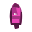 Kapal Kargo
- 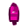 Kapal Penumpang
- 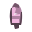 Kapal Tanker
- Kapal Penangkap Ikan
- 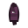 N/A
- 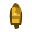 Stasiun Pesisir
- 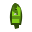 SAR
- 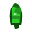 Radio Penyelam
- 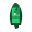 Alat Bantu Navigasi
- 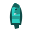 Kapal Pendukung
- AIS SART
- 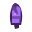 MOB
- EPIRB
- 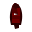 N/A
Kapal Global
-
Ship Statistics
Berlayar: 0
Berlabuh: 0